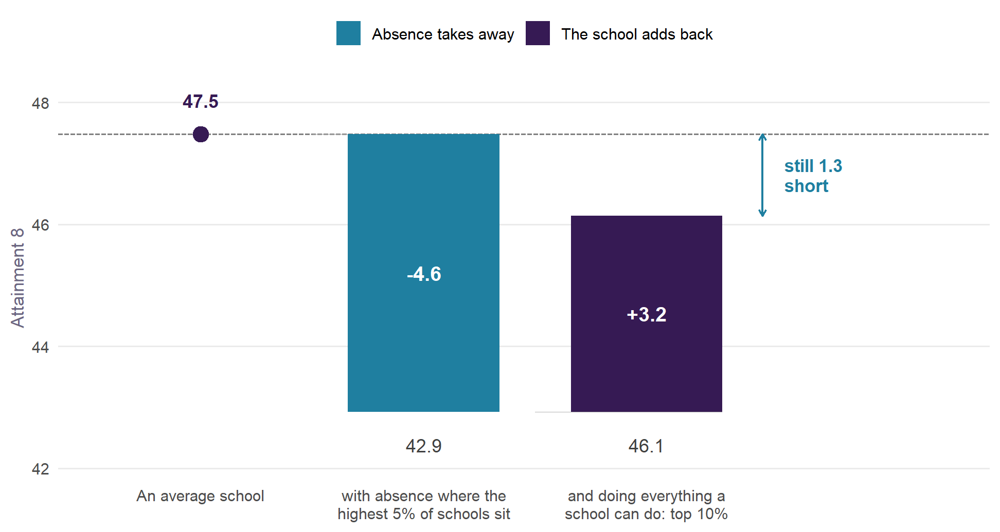
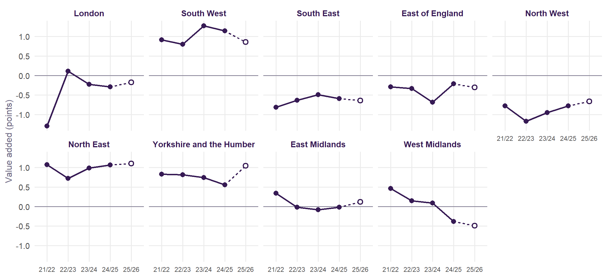

How much does a school add? And how much does absence (or anything else) take away?
Value Added v2.0 measures each secondary school in England against what its intake and context would lead us to expect: for all pupils, for disadvantaged and non-disadvantaged pupils, and now for girls and boys. It is the next step from How to Pull the Right Lever, rebuilt on the recommendations of a review of the original measure.
3,265
schools, 2021/22 to 2024/25
5
pupil groups, including girls and boys
0.88
reliability of a school’s four-year value added
Sep 2026
latest Ofsted judgements included
What a school adds, and what absence takes away
Value added measures what a school does after its intake and context are accounted for, absence included. So the two quantities below are not the same thing counted twice: one is what absence moves, the other is what the school moves once absence has already been allowed for.
Read it left to right. An average school sits at the England mean. Put its absence where the highest 5% of schools sit (13.0% full-year absence in 2024/25, against a typical 8.4%) and it loses 4.6 Attainment 8 points. Now ask it to do everything a school can do – to be a top-ten-per-cent school on value added, net of its intake – and it gains 3.2 back. It is still 1.3 points below where it started. Being exceptional buys back about 71% of what high absence costs.
It also falls hardest on the pupils with the least room to absorb it. The same change in absence is worth 5.1 points of disadvantaged pupils’ Attainment 8, against 4.6 for pupils as a whole, and from a lower base: it takes 13.3% of what they would otherwise score rather than 9.6%, a gradient 41% steeper. Absence is not only the largest lever, it is a regressive one.
One caveat, stated plainly because the scale of this invites over-reading. The model is associational. The gradient says what schools with more absence look like once intake is accounted for, not what a particular school would gain by cutting absence by a given amount. The direction and the order of magnitude are what to take from it. How each number is computed from the model is set out in the methodology.
What is new in v2.0
- Measured against intake and context only. The Ofsted grade and the teacher workforce terms are out of the expectation: they partly reflect the very performance being measured.
- Fairer to schools with harder intakes. Pupil mobility, SEN rates, a single-sex term and neighbourhood education are in.
- Against England. A school is compared with similar schools anywhere, with the local authority’s own effect reported beside it.
- Honest about uncertainty. Estimates are shrunk by their reliability and carry 95% intervals.
- Girls and boys have their own value added for the first time.
- The latest Ofsted judgement sits beside every school, including the new report cards.
- Over time. Every school has a figure for each year, so trajectories and moving averages over a chosen window sit beside the four-year figure.
How the regions have moved

Between 2021/22 and 2024/25, London rose most (+1.0 points) and West Midlands fell most (-0.8). Regions are ordered by that change. The explorer shows the same for any area and every school, with a moving average over a window you choose.
Explore
Methodology
The specification, the model for each pupil group, and how v2.0 compares with the published measure.
Explore by area
Pick a region, a combined or mayoral authority, or a local authority, and see its schools on a map and in a table, with their trajectories and moving averages over time.
Sussex
East Sussex, West Sussex and Brighton and Hove, with a page for each authority and district.
The review
The analysis of the original measure that v2.0 is built on: every term tested, and ten recommendations.
Roadmap
What comes next: a new policy simulator, new years of data as DfE publishes them, and more.
The original work
How to Pull the Right Lever: the national model, Brighton and Hove, and the policy simulator.
Built from published Department for Education and Ofsted data and the 2021 Census. Nothing uses pupil-level records.